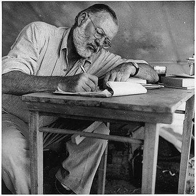
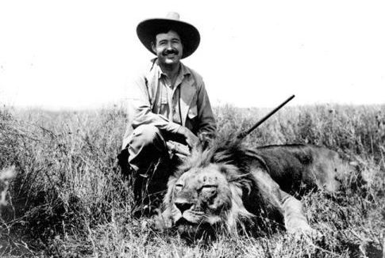
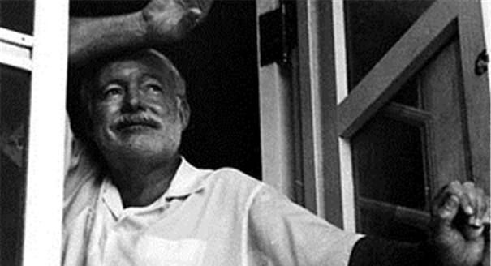

谢谢少侠，有机会请你吃甜筒🍦
谢谢少侠，有机会请你吃甜筒🍦
About Author |
|---|
1899年7月21日，海明威出生于美国伊利诺伊州芝加哥市郊区奥克帕克，童年时光大多在瓦隆湖(在此受了洗礼仪式)的农舍中度过，喜欢读图画书和动物漫画，听各类故事和模仿不同人物，对缝纫等亦很感兴趣。 海明威的母亲希望自己的儿子能在音乐上有所发展，但海明威却承袭了父亲的兴趣，如打猎、钓鱼、在森林和湖泊中露营，因此很热爱大自然。  1913 - 1917年，海明威接受高中教育，学业、体育上成绩优越，在英语方面天赋突出。初中时，为两个文学报社撰写过文章，升上高中后，成为学报的编辑。他会使用“Ring Lardner Jr.”这笔名写作，以纪念他心目中的文学英雄拉德纳(Ring Lardner)。高中毕业之后，拒绝入读大学，以18岁之龄到了在美国举足轻重的《堪城星报》（Kansas City Star）当记者，正式开始了他的写作生涯。在《堪城星报》工作了6个月的过程中，海明威受到了良好的训练。 1918年(一战时间为 1914年7月28日 - 1918年11月11日)，海明威不顾父亲的反对，辞掉了记者一职，尝试加入美国军事，以观察一战的战斗情况，但由于视力缺陷导致体检不及格，被调到红十字会救伤队担任救护车司机。在前往意大利前线途中，他在德国炮火下的巴黎逗留，没有在安全的旅馆停留，反而尽量接近战场，在前线目睹了战争的残酷。  1918年7月8日，海明威在输送补给品时受伤，并把意大利伤兵拖到安全地带，被意大利政府授予银制勇敢勋章。之后海明威在米兰一个美国红十字会的医院工作(他早期小说《永别了，武器》的创作灵感来源于此，并把自己当作小说的主人公)。 1920年，海明威迁往安大略省多伦多，并在多伦多星报找到工作，成为了自由作家、记者和海外特派员，结识了星报记者莫利·卡拉汉(Morley Callaghan)。 1920 - 1921年，海明威在芝加哥北部附近居住的海明威为一所小报社工作。在1921年，娶了第一任妻子 - 哈德莉·理察逊(Hadley Richardson)。到12月，举家迁出国外，再没有回到那里居住。在巴黎安顿的海明威，给星报进行关于希土战争的采访的同时，受安德森引导，参与“巴黎现代主义运动”。 1923年，海明威处女作《三个故事和十首诗》在巴黎出版。海明威的第一个儿子出生后，由于要支持整个家庭的开支，辞去多伦多星报的工作。 1925年，短篇故事系列《在我们的时代里》出版，显示出简洁的写作风格。 1926年，小说《太阳照常升起》出版。 1927年，海明威与哈德莉·理察逊离婚，娶第二任妻子宝琳·费孚(Pauline Pfeiffer)，并出版《没有女人的男人》。 1928年，海明威离开巴黎，居住在美国佛罗里达州和古巴，过着宁静的田园生活。他经常去狩猎、捕鱼、看斗牛。后续几年中，他的二儿子和三儿子出生。 1931年，海明威迁往基韦斯特(他在那里住的房子现为博物馆)，并为《午后之死》和《胜者一无所获》积累素材。 1932年，《午后之死》出版。尊奉美国建筑师罗德维希的名言“越少，就越多”，使作品趋于精炼，缩短了作品与读者之间的距离，提出了“冰山原则”，只表现事物的八分之一，使作品充实、含蓄、耐人寻味。 
1933年秋，海明威随一队狩猎的旅行队到了非洲，根据在非洲的见闻和印象，于1935年出版了《非洲的青山》、《乞力马扎罗山的雪》和《弗朗西斯·麦康伯短促的幸福生活》。 
1937 - 1938年，海明威以战地记者的身份奔波于西班牙内战前线。在二战期间(1939年9月1日 — 1945年9月2日)，他作为记者随军行动，并参加了解放巴黎的战斗。此期间写的散文《告发》于1969年附《第五纵队与西班牙内战的四个故事》出版。 1940年，海明威与费孚结束婚姻，身体健康问题接踵而至，对海明威造成很大困扰。同年，发表了以西班牙内战为背景的反法西斯主义长篇小说《丧钟为谁而鸣》。 1941年底，太平洋战争爆发后，海明威立即将自己的游艇改装成巡艇，侦察德国潜艇的行动，为消灭敌人提供情报。(上世纪90年代中期，前克格勃人员亚历山大·瓦西里耶夫获准进入苏联情报机关档案馆，惊讶地发现，海明威竟然曾于1941年被招募为克格勃间谍，代号:阿尔戈，可惜没有获得任何有价值的情报。) 1944年，海明威随同美军去欧洲采访，在一次飞机失事中受重伤，但痊愈后仍深入敌后采访。二战结束后，他获得一枚铜质奖章。 1948年，海明威与玛莎离婚，并与战时通讯记者玛丽·维尔许·海明威(Mary Welsh Hemingway)结婚，不久重返古巴。 
1950年，以二战后威尼斯为背景的《过河入林》出版(马尔克斯曾表示"没有《过河入林》就没有《老人与海》")。 1952年，出版《老人与海》。 1961年7月2日，海明威用猎枪结束了自己的生命，享年62岁。 
|
Content
历史访问次数: